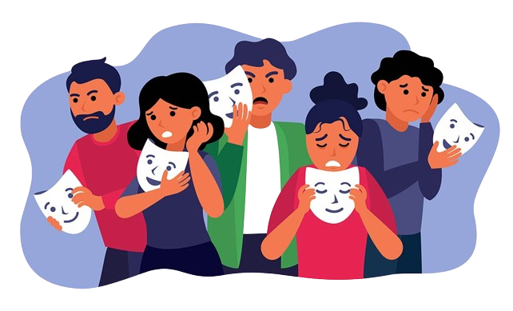

La salud mental incluye nuestro bienestar emocional, psicológico y social. Afecta la forma en que pensamos, sentimos y actuamos. También nos ayuda a determinar cómo manejar el estrés, relacionarnos con otras personas y tomar decisiones.
La salud mental es importante en todas las etapas de la vida, desde la niñez y la adolescencia hasta la edad adulta. Si tienes problemas de salud mental , tu pensamiento, ánimo y comportamiento pueden verse afectados.
La Salud del Adolescente en México
Factores que afectan la salud mental de los adolescentes
¿Qué es el trasnstorno emocional?
Los trastornos emocionales se refieren a condiciones que afectan la manera en que las personas sienten y expresan sus emociones.
¿Qué es el transtorno de comportamiento?
Se refiere a patrones persistentes de comportamiento que afectan la funcionalidad del individuo.
¿Qué es el transtorno alimenticio?
Condiciones graves relacionadas con comportamientos alimentarios extremos y dañinos.
Promoción y Prevención para el control de emociones
Tratamiento y Ayuda
Tel. 594-957-0003
Frases Motivacionales sobre la Salud Mental
Da clic en el botón
Da clic en el botón
© 2024 CECYTEM COACALCO | GAFEN. Todos los Derechos Reservados